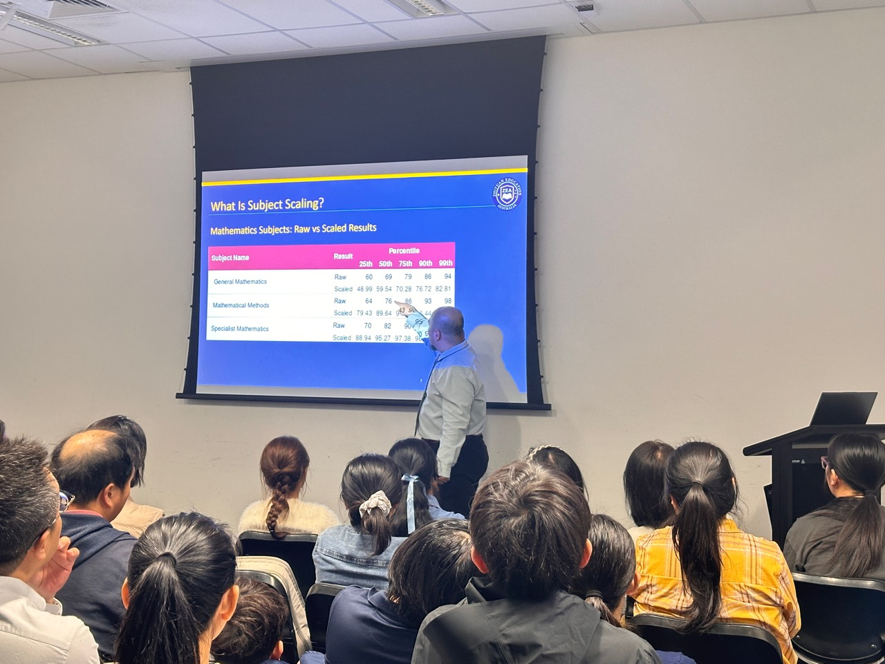
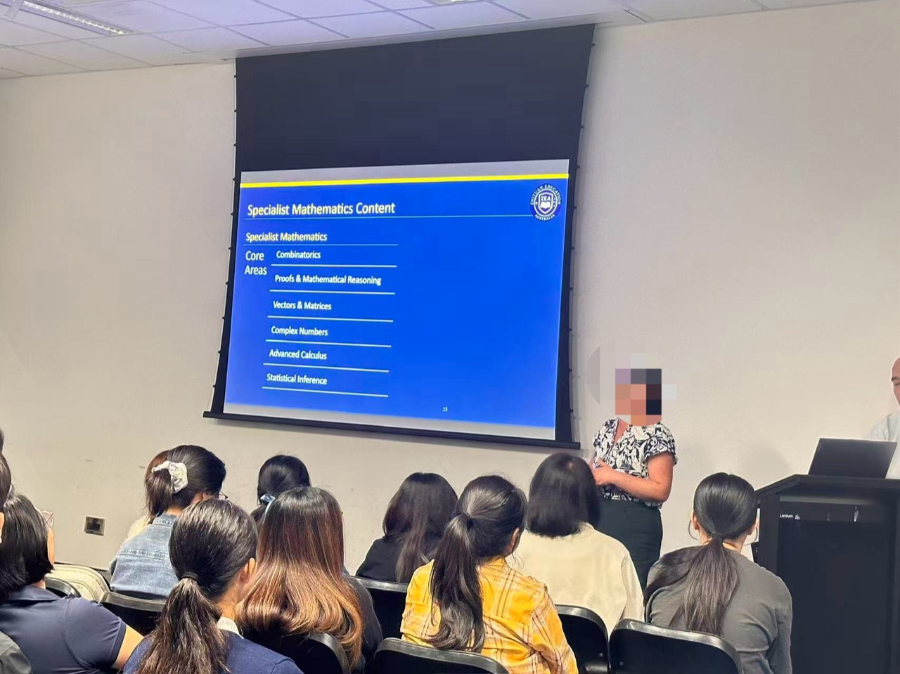
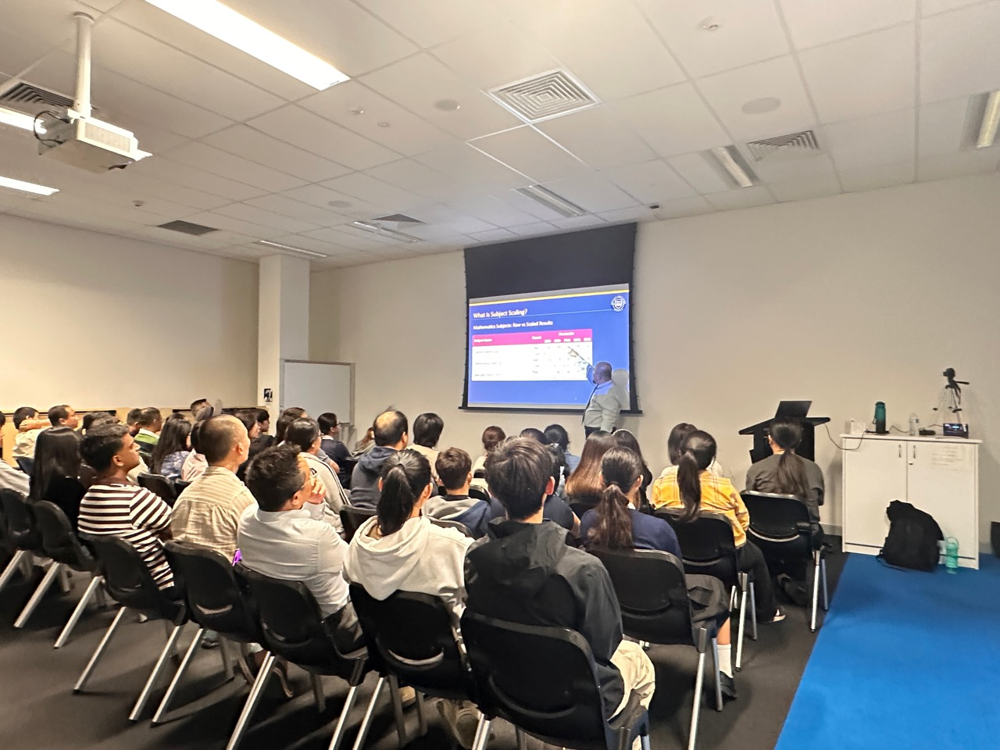
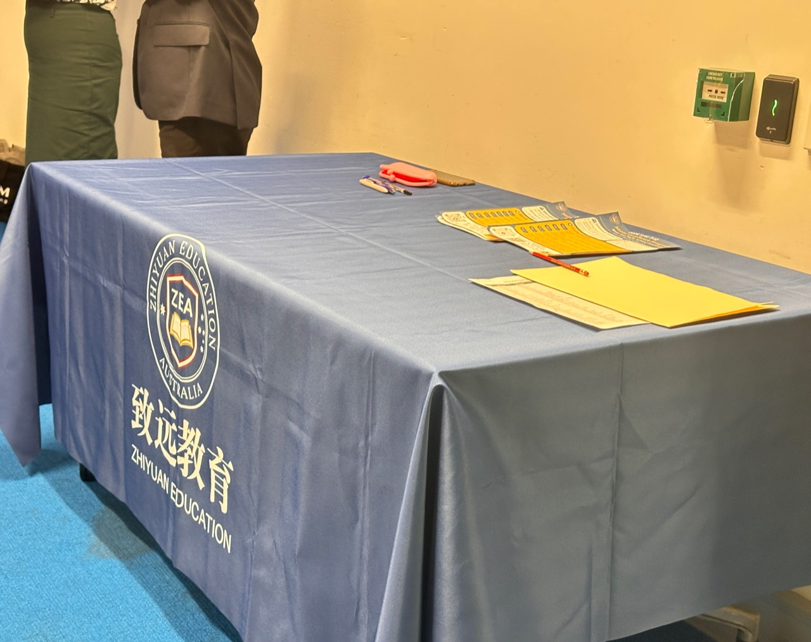

01
Years 8–9
Build fluency with core ideas and develop habits for showing mathematical thinking.
Zhiyuan is a Brisbane coaching school teaching Queensland mathematics. Classes are held in rented facilities at Mansfield State High School. Our teaching focuses on reasoning, problem solving and thoughtful subject choices.
Explore our learning focus ↓Preview an application →From foundations to senior subjects, students need more than a collection of formulas. Our learning focus connects concepts, methods and explanations.
Build fluency with core ideas and develop habits for showing mathematical thinking.
Explore the transition towards Mathematical Methods, Specialist Mathematics and the Year 10 IB class shown in our timetable.
Work on Mathematical Methods and Specialist Mathematics through reasoning, modelling and precise written solutions.
In Methods, a correct derivative is only part of a complete response. Students also need to check the domain or boundary and explain what a result means in context. In Specialist, success depends on seeing how ideas fit together and justifying each step.

A look inside our mathematics subject selection event, where families explored Queensland senior mathematics pathways, subject scaling and ways to choose subjects thoughtfully.



Photos supplied by Zhiyuan Education. Event images are shown as a record of the activity.
10 October – 28 November 2026 · eight-week program. Venue listed on the supplied timetable: MSHS (rented facilities). Please confirm class details directly with Zhiyuan Education before attending.
| Class | Saturday time | Venue |
|---|---|---|
| Year 8 | 9:30–11:00 am | MSHS |
| Year 9 | 11:15 am–12:45 pm | MSHS |
| Year 10 IB | 3:15–4:45 pm | MSHS |
| Year 10 Methods | 1:30–3:00 pm | MSHS |
| Year 10 Specialist | 3:15–4:45 pm | MSHS |
| Year 11 Methods | 11:15 am–12:45 pm | MSHS |
| Year 11 Specialist | 9:30–11:00 am | MSHS |
Schedule transcribed from the image provided for this website; changes may occur.
See the classes listed in our timetable and preview an enquiry in English or Chinese.
Preview an application →